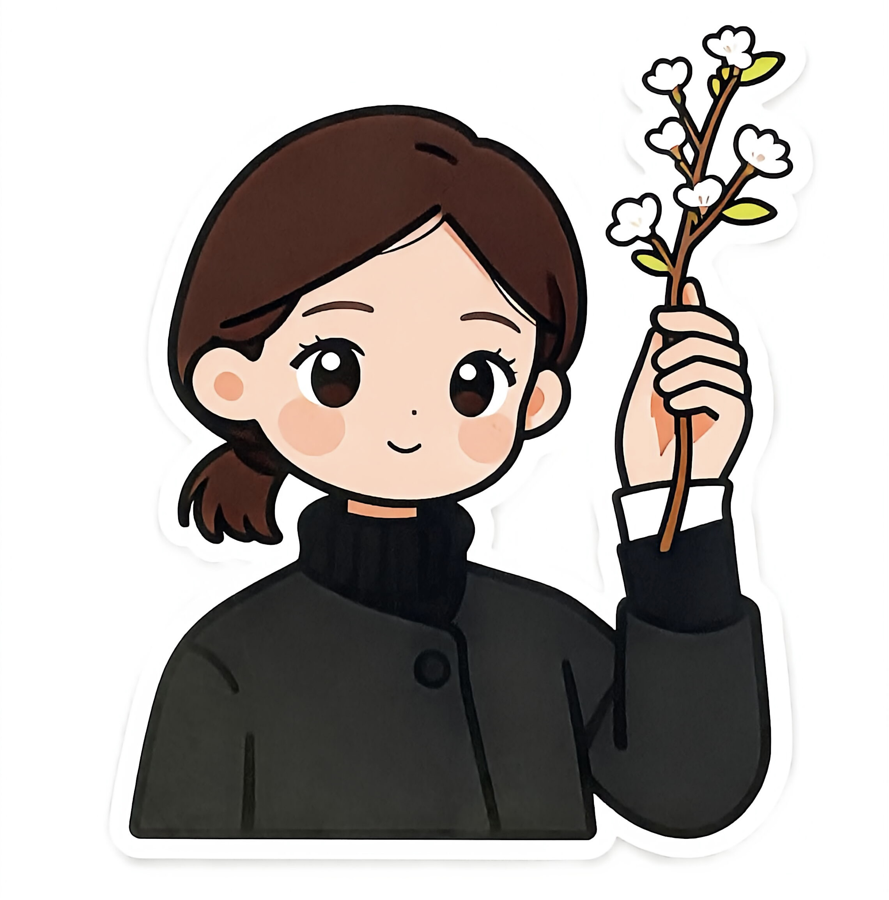
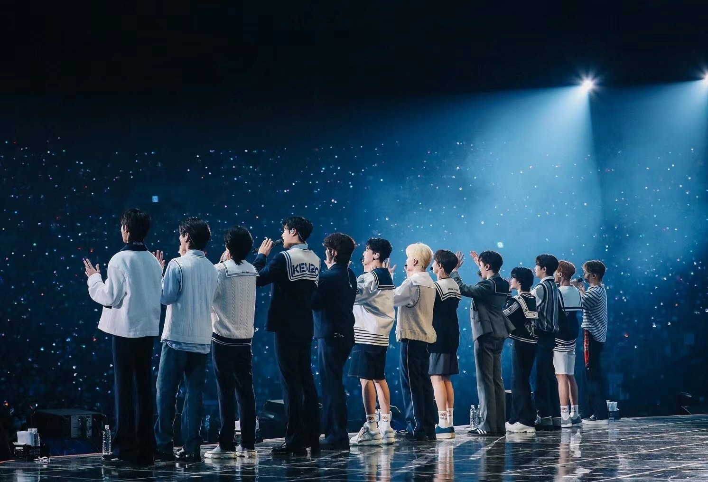
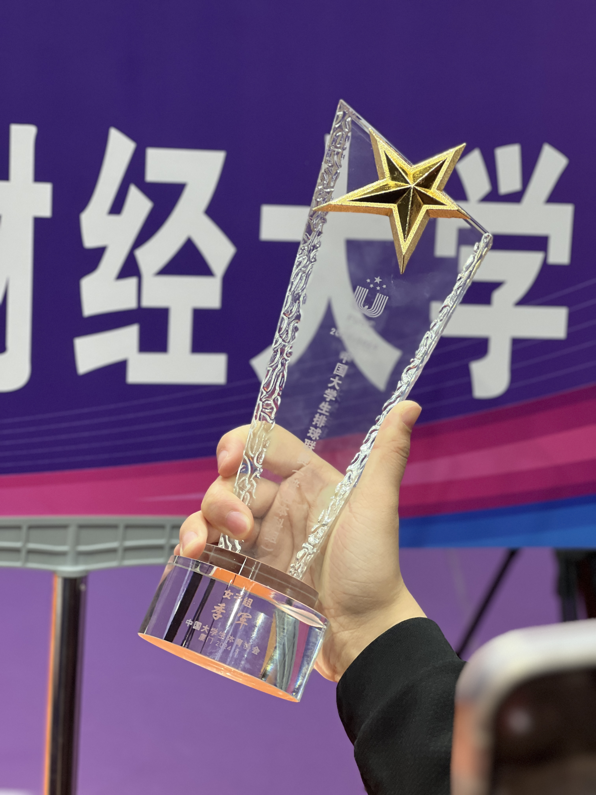
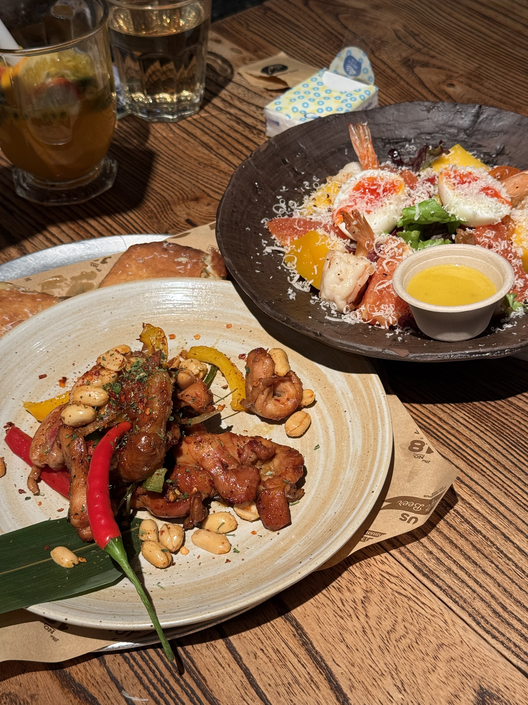

你好，我是LAN
欢迎来到我的像素世界！这里记录了我的生活、爱好和美食探索之旅。
关于我
基本介绍
我是一个热爱生活、喜欢探索的新时代千玺后。喜欢追星、旅行和排球，同时也热爱美食探索和各种美好的事物。
地点
中国
MBTI
ENFJ
星座
双子座
座右铭
我们存在于一生仅一次的当下
我的爱好
生活因多样而精彩，这些是我热爱的活动

追星
特别喜欢韩国组合SEVENTEEN，欣赏他们的音乐才华和团队精神。

旅行
喜欢探索不同的城市和文化，用脚步丈量世界的美好。

排球
享受团队运动的乐趣，喜欢排球带来的激情与协作。
美食探访日记
记录每一次味蕾的冒险，分享美食的快乐
2026-03-25

Brut Eatery
📍 西餐 · Brunch餐厅
一家主打Brunch的餐厅，拌饭酱汁做的非常浓郁，开心果巴斯克口感丝滑绵密。
2026-03-20

博多天一天妇罗
📍 日料 · 天妇罗专门店
鹅肝入口即化，肥牛上的酱汁非常浓郁，天妇罗外酥里嫩。
2026-03-15

18号酒馆
📍 西餐 · 酒吧餐厅
沙拉口感较为清爽，爆浆金枪鱼芝士披萨口感扎实，氛围轻松愉快。
找到我
在这些平台关注我的动态